作者：创世魂
● 概述
本类中的功能不能直接使用，必须依赖于某个组件使用，例如：“按钮”、“选择框”等继承了本类的组件才能使用。
● 被单击(事件)
帮助文档如下图：
当按钮被鼠标左键点击后将触发本事件。
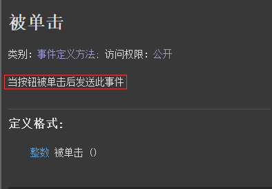
代码编写如下图：
添加本事件后，通过“来源对象”参数可确定是哪个按钮点击。
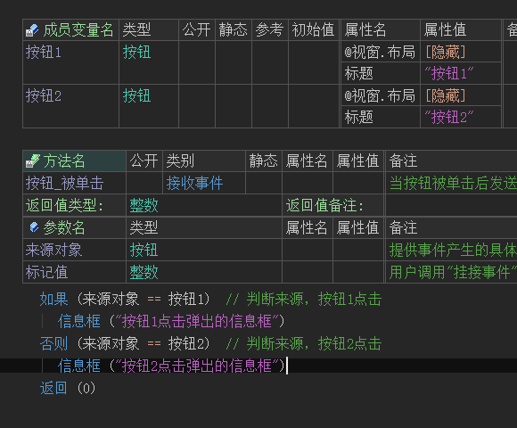
运行效果如下图：
最终两个按钮点击后会弹出不同的信息框。
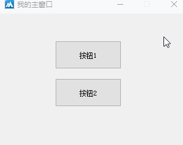
● 图标(写)
帮助文档如下图：
通过本属性可以在按钮上设置一个图标，想要清空图标属性值可填写“空资源.空图标”即可。
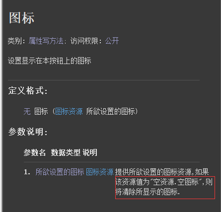
代码编写如下图：
在按钮组件属性栏，增加本属性并引用一个ico格式的图标文件。
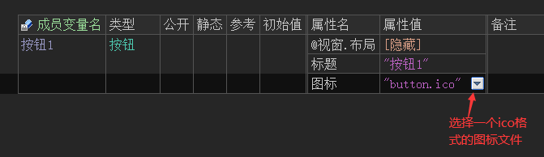
运行效果如下图：
最终软件运行后按钮上会显示一个图标，但是按钮标题会被图标覆盖。
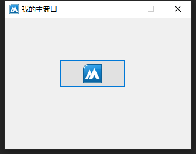
● 图片(写)
帮助文档如下图：
通过本属性可给当前组件设置一个图片。
本属性和“图标”属性的区别在于，本属性不限制图片格式。
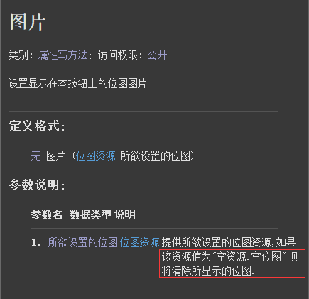
代码编写如下图：
在按钮组件的属性栏，设置本属性并引入一个png图片。
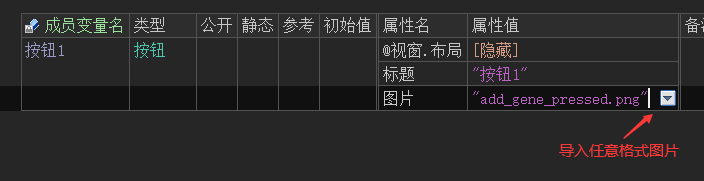
运行效果如下图：
最终图片会显示在按钮上，但是会覆盖标题。
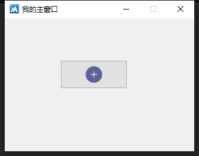
● 横向对齐方式(读写)
帮助文档如下图：
通过本属性可设置按钮标题的文本对齐方式，调用方法“横向对齐模式.XXX”。
同名读属性可以读取当前的对齐模式。
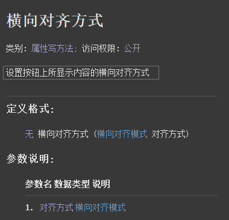
代码编写如下图：
1、在按钮组件的属性栏中设置本属性，并选择左边。
2、当按钮点击后，判断当前按钮的横向对齐方式是否为左边。
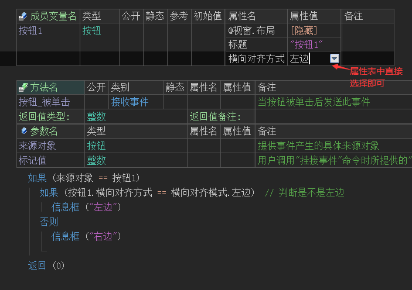
运行效果如下图：
软件运行后可以看到按钮标题显示在组件的左边位置，并且点击后弹出的信息框也是左边。
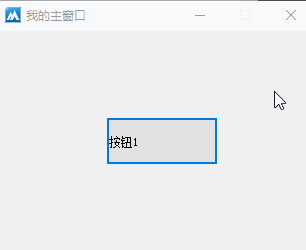
●纵向对齐方式(读写)
帮助文档如下图：
本属性用于设置标题的纵向对齐方式，调用方法“纵向对齐模式.XXX”.
同名读属性可以用于判断当前纵向对齐模式。
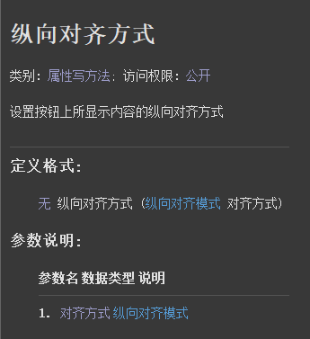
代码编写如下图：
1、在按钮组件的属性栏设置本属性为顶边。
2、按钮点击后，读取当前组件的对齐方式是否为顶边。
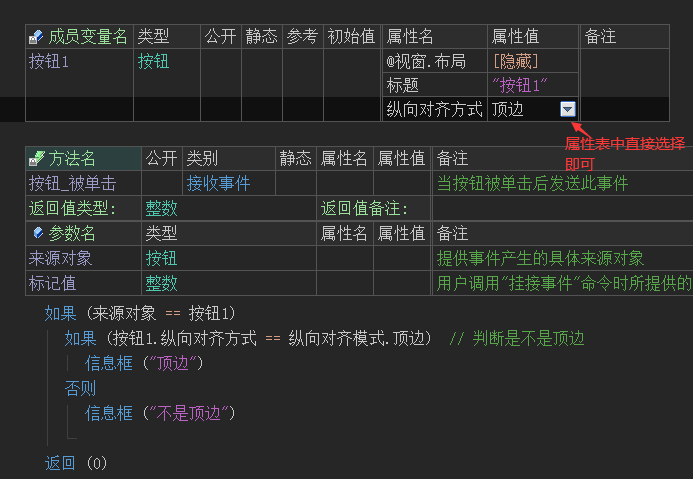
运行效果如下图：
软件运行后可以看到按钮的标题位于顶边，并且点击后也提示顶边。
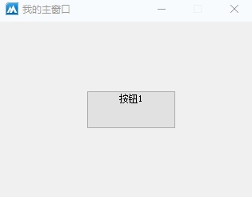
● 背景颜色(读写)
帮助文档如下图：
通过本属性可设置组件背景色，属性值可使用“颜色类.XX”提供的常量值。
或者使用“0x”+十六进制的颜色值，例如：0xFF0000，表示蓝色。
注意：本属性对按钮组件无效，“单选框”，“选择框”等组件可以使用，如果某个组件继承了本属性但设置颜色无效，证明该组件不支持本属性。
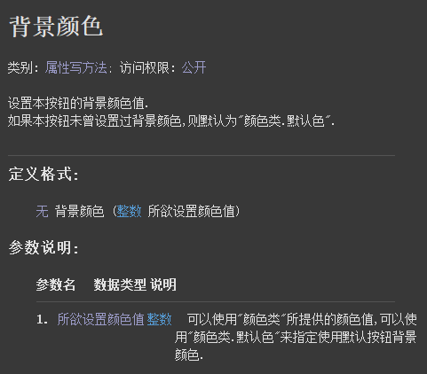
代码编写如下图：
在单选框组件的属性栏设置本属性为蓝色。
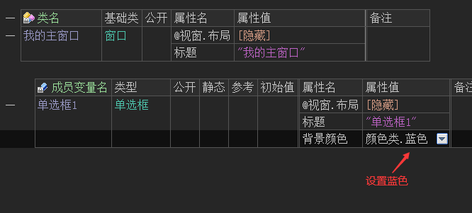
运行效果如下图：
软件运行后可看到当前组件背景色被设置成了蓝色。
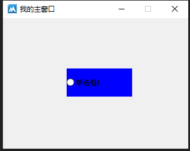